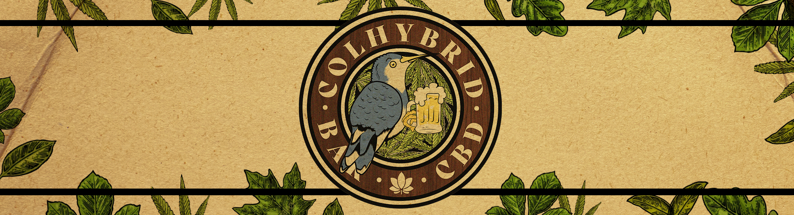
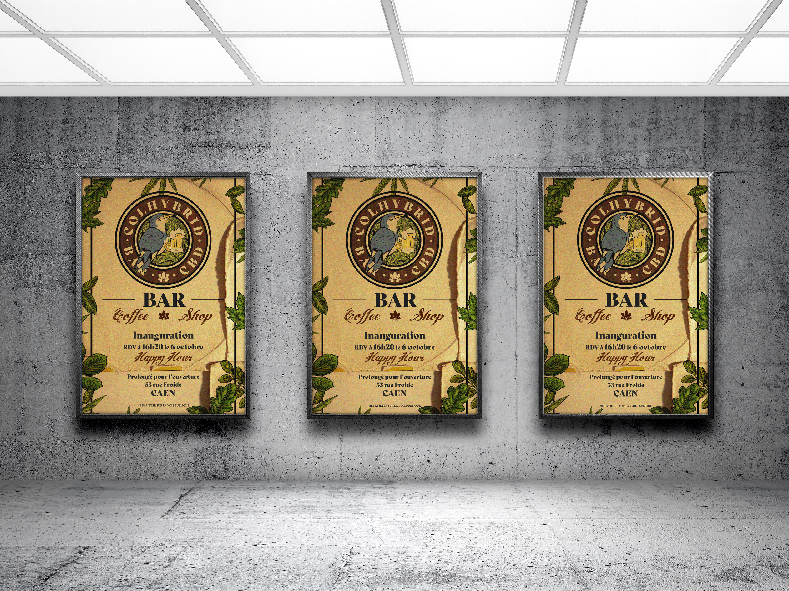
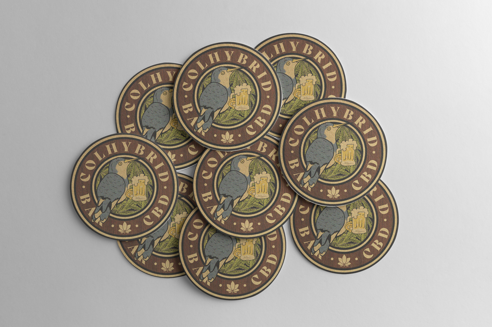
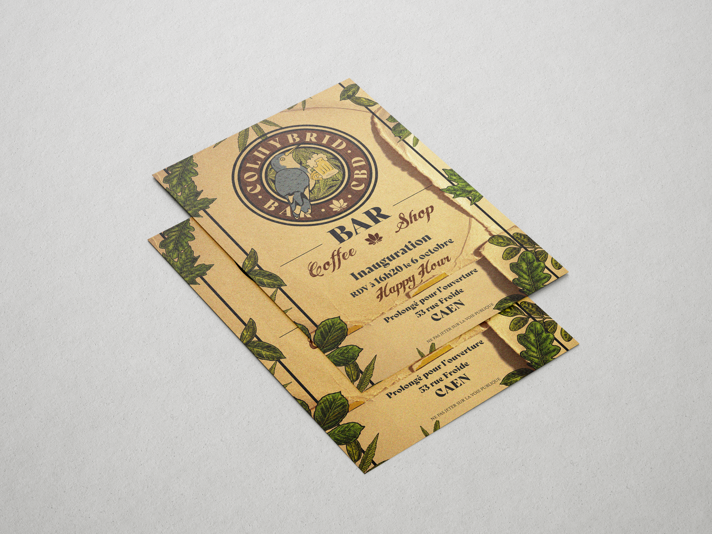

Le brief
Concevoir l'identité visuelle complète d'un établissement fictif, en développant un univers graphique cohérent.
Portfolio
Identité visuelle
Création fictive d'une identité visuelle pour un concept de bar hybride associant bar et coffee shop.
Concevoir l'identité visuelle complète d'un établissement fictif, en développant un univers graphique cohérent.





Colhybrid est un concept fictif de bar hybride associant un bar et un coffee shop, inspiré notamment des établissements de ce type présents à Amsterdam, tout en imaginant un fonctionnement adapté au contexte français.
Le projet a été réalisé dans le cadre de ma formation en graphisme entre 2019 et 2022.
Le nom Colhybrid fait référence à la double identité du lieu. « Colhybrid » associe l'idée du colibri et celle d'un concept hybride. Le colibri évoque notamment le nectar, tandis que « hybrid » traduit directement l'association des différentes activités du lieu.
Le concept comprend également une dimension boutique, notamment autour de produits liés au CBD, dans le cadre fictif du projet.
Découvrez la charte graphique complète du projet, regroupant les différents éléments de l'identité visuelle développée pour Colhybrid.
Consulter la charte graphique PDF